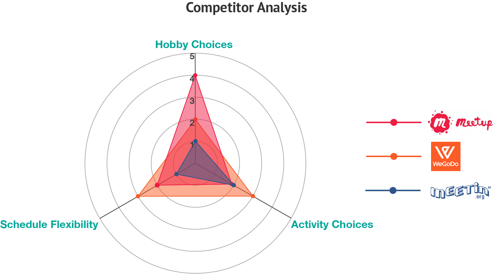
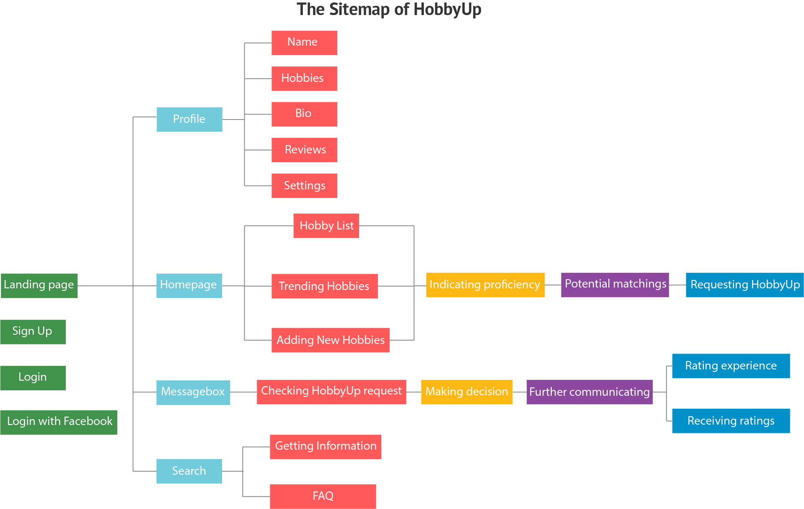
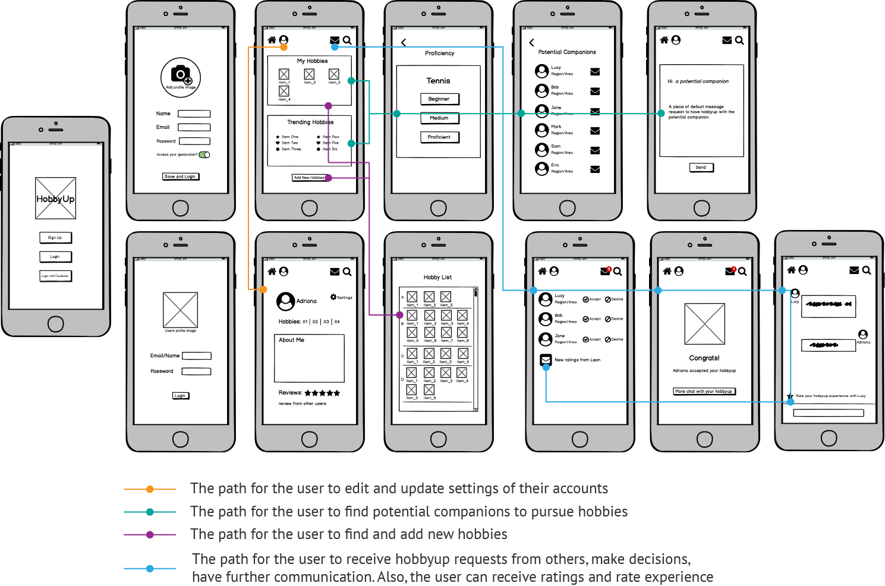
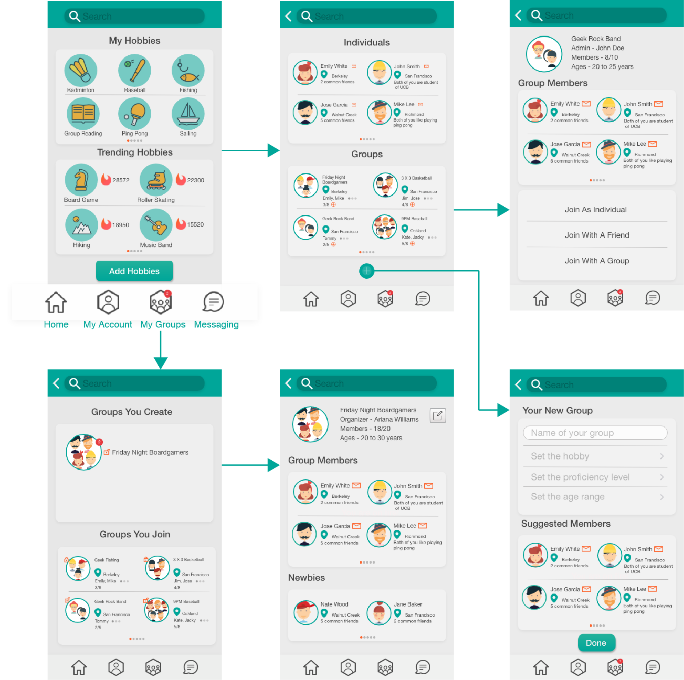
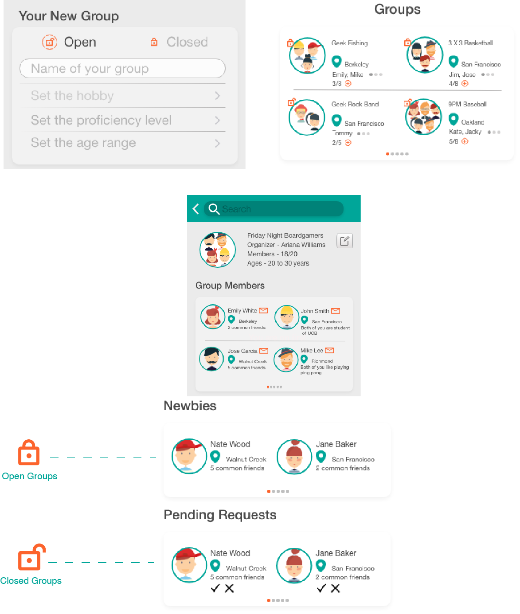
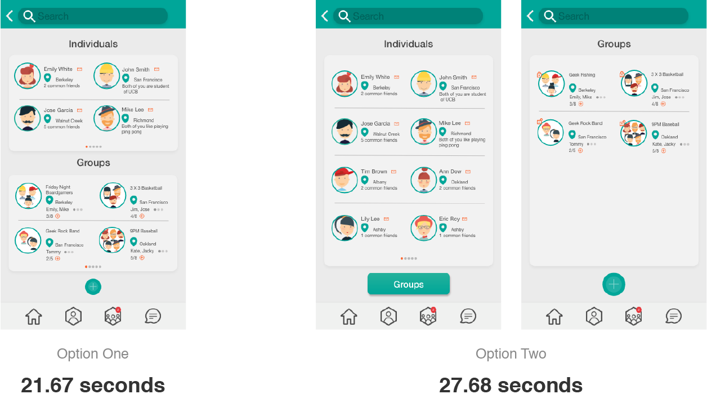

HobbyUp
A mobile social app designed for connecting people in communities through helping them easily find companions to pursue hobbies.
Background
As people ourselves who recently moved to Berkeley to start new life, we deeply feel that the connection to the community impacts the life quality and well-being. Being motivated by this sense, all five members indicated a preference for the "Connected Communities" category of the annual design competition Big Ideas, we got the challenge that is to describe a novel solution that leverages the capacity of technology to engage and enhance the wellbeing of communities, campuses, and cities.
My Role
UX Researcher & UX Designer
Team
Mehmet, Nathan, Rajasi, Shaivya
Duration
10 weeks
Qian's Contribution
Ideation | User Research | Crafted Personas | Sitemap | Low/High-fi Prototypes | User Testing | Built Style Guide
Design Process
Ideation
We collaboratively framed the problem statement and assumption by following the Lean UX principles. With very open ended prompt and the broad scope of target user, the promising idea Hobby Connection was selected with the following ideation process:

Eight potential ideas were proposed after a collaborative brainstorming.

Dot voting was used in idea ranking to determine the promising idea.

Based on the whole team’s expertise and constraints, the hobby connection idea was finally selected to work on.
User Research
With the hobby connection idea, we assumed that hobbies can be the key to motivate people (especially for those who are new to communities) to connect to others in communities.
Three main questions - how do people experience finding companions to pursue hobbies, what problems do they face in looking for hobby companions, and what tools have they used to find companions were used to guide the idea validation through conducting user research.

In-depth Interview
To discover how people experience pursuing hobbies with companions, the team conducted 15 in-person interviews within one week at the Easy Bay area by following the guerrilla research approach.
- The new living environment and busy schedules are two major obstacles for finding companions to pursue hobbies.
- The existing social media doesn’t work well in helping the user to find companions to pursue hobbies.
- Most people are open to new hobbies as well as meeting new friends via pursuing hobbies.

Survey
To validate the qualitative research findings as well as help the user to build effective hobby connection product, the team created a survey to gather people’s opinions on hobby pursuing with companions. 145 valid responses were collected via Google Surveys within four days.
- 54%(15% were neutral) of respondents struggle to find companions in their communities to pursue hobbies.
- 59.6% of respondents prefer to use social media websites to look for companions who have similar hobbies.
- 43.5%(40% were neutral) of respondents are feel comfortable to pursue hobbies with those they don’t know or have just met.
Three existing products - WeGoDo, Meetin and Meetup which aims at connecting people with their hobbies and interests were identified from the interview. With these competitor products, we conducted the following competitor analysis based on three key factors - Hobby Choice, Activity Choice, and Schedule Flexibility which users value most, to have a better understanding of how the existing market satisfies the user's needs as well as inform our design solutions.
Design Solution
Being informed by the insights uncovered in the user research, we decided to design the product as a geolocated social platform with which people can get a plethora hobby choices and potential companions as well as freedom of selecting when, where and with whom they'd like to pursue hobbies in their communities.
Interaction Design
To better incorporate the user-centered design into the product design process, personas were created on the basis of two types of users learned from the user research.
{kind=link}
{kind=link}
With regard to the personas, the team brainstormed the features which our product should have. Then, the following sitemap was created to show the structure of the social platform application we were designing.
Being guided by the sitemap, we proceed with designing for an intuitive experience with more concrete interactive flows and UI elements. I created the following set of low fidelity mockups with Balsamiq by incorporating sketches shared by other team members.
{kind=link}
Testing & Iterating
The POP app was used to convert these low-fi mockups into a clickable prototype that can be played by the user via their mobile devices. The first round of usability testing was conducted with 15 target users (each team member worked with testing three users). After politely reaching out to the user and introducing the features of this product, we asked them to perform the task finding potential matches to pursue hobbies. During this process, we encouraged the participants to think out loud. While the testing task seemed very straightforward, users met different blockers and problems which were mainly reflected on the following comments:
It seems that I can only find individual companions from the potential matches. How about groups (for hobbies)?
I can't find the option of choosing or forming a group. Do I need to add 11 people one by one if I want to play soccer?
It is not that easy to reach the icons on the top with single hand use.
Being informed by the user feedback from the first round usability testing, we mainly adjusted the layout of navigation icons and modified the "potential matchings" flow. As shown in the following figure: a bottom navigation bar has been designed for four main features - Home, My Account, My Groups and Messaging of this application. The modified potential matchings flow is composed of individuals, groups, and a button to create groups after the user select a hobby. Meanwhile, the user will be provided with three ways (i.e., join as an individual, with a friend, or with a group) to join groups.
With the modified higher fidelity mockups, we ran a second round usability testing with another 10 users. With the bottom navigation and the modified potential matchings flow, users reported fewer problems than those from the first round usability testing. Nevertheless, there still existed two problems: One was for how to manage groups with a joining setup. The other was that some users found the potential matchings flow including individuals and groups together was a bit complicated.
To fix the first problem, an open/closed feature has been added to the creating new groups flow as follows:
To address the second problem, we designed a following alternative option for the potential matches flow that places the individual and group matches on two separate pages. Then, we used the Keystroke-Level Model (KLM) to test the optimal task performance between the original one and its alternative. Specifically, we modeled each choice the user has to make by a mental task and added distraction operators each time there are many things (e.g., a list of attractive hobbies or other user profiles) displayed on screen. It turned out that the option one which cost the user 21.67 sec is more efficient than the option two (i.e., 27.68 sec). Therefore, the potential matching flow was designed with individual and group matches on the same page.
Heuristic Evaluation
Before moving forward with designing the final mockups, a heuristic analysis was conducted to assess usability issues of this product design. Due to the time constraint, we only invited one heuristic expert in the evaluation. To better incorporate the insights from the evaluator, another teammate and I participated in this session as observers to answer questions from the evaluator and took notes.
Heuristics
A list of heuristics is selected based on the Nielsen and Molich's 10 Usability Heuristics for User Interface Design.
Evaluator
A professional with a human factors and cognitive psychology background, leading research of product development in a top-notch tech company.
Major Findings
- User control and freedom: Adding an option of taking a guest tour on the landing page.
- Aesthetic and minimalist design: Removing elements which are rarely needed.
- Consistency and standards: Keeping the styling of action buttons in a consistent way.
- Match between system and the real world: Making the interactive flows by following the real-world conventions.
- Error prevention: Preventing user errors with helpful diagnostic messages or refining the current design with more testings.
Final Design
With incorporating insights from the heuristics analysis, I led the team in creating the high fidelity mockups for the application – HobbyUp. Specifically, we did color study, which takes the accessibility issue of colorblind users into consideration. Also, the Gestalt principles was applied to the visual design of the UI. What's more, we adopted the hexagon shape as a feature element of the visual design, since the connected structure of hexagon resonates with the connection nature of the HobbyUp application. The Adobe XD was used to create the high fidelity mockups. Then, with all high fidelity mockups, an interactive prototype was generated with the InVision app.
{kind=link}
{kind=link}
{kind=link}
{kind=link}
{kind=link}
{kind=link}
{kind=link}
{kind=link}
What I Learned & Future Direction
I learned a lot from the whole product design process. The most important one is the Rapid Iterative Testing and Evaluation (RITE) methodology. Our team adopted it in the testing & iteration session, which was very helpful for us to receive a wide range of feedback from the testing users in a limited design timeframe. Meanwhile, thanks to the RITE, changes and modifications based on feedback was quickly implemented, continually validated, and refined. Also, following the Lean UX principles, I enjoyed the process of collaborating with other team members. I kept listening to all of them and exchanged ideas about different solutions for the product design. At the same time, we communicated with others when we spot problems or confusions. What's more, for the design tool, I found the Adobe XD software is an efficient and time saving tool as well as a platform for a group based mockup design work. Besides, it allows me to easily incorporate the visual design which I did with Adobe Illustrator and Photoshop.
With regard to the future direction, I am planning to launch the HobbyUp app if I have more time and app development resource. Meanwhile, a design for the Android system will be created. Also, I want to employ the UX metrics to measure how the user actually feel using this app to find companions to pursue hobbies with. Additionally, more arounds of usability testing will be conducted to find problems.
Connect With Me
LinkedIn Dribble Twitter